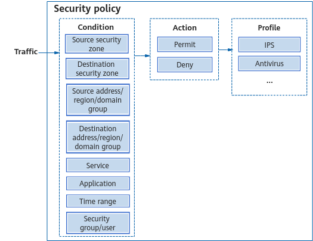

A security policy contains a set of control rules that consist of matching conditions and actions. When receiving traffic, a device identifies traffic attributes (such as 5-tuple and time range) and matches them against the conditions specified in a security policy. If all the conditions are met, the traffic matches the security policy. The device then takes the action specified in the security policy on the traffic.

Matching Condition |
Function |
Example |
|---|---|---|
Source security zone Destination security zone |
Security zone from which traffic is originated or to which traffic is destined. |
Assume that the security zone of intranet users is Trust and the security zone of an external network is Untrust. To control the access of intranet users to the external network, you can configure a security policy rule in which the source security zone is Trust and destination security zone is Untrust. |
Source address/Region/Domain group Destination address/Region/Domain group |
Address from which traffic is originated or to which traffic is destined. The value can be an address, address group, region, and domain group. |
Example 1: To allow employees to access the web server on the public network, you can configure a security policy rule in which the source addresses are the IP addresses of the employees and the destination address is any. Example 2: To allow employees to access only the web server on their enterprise's internal network, you can configure a security policy rule in which the source addresses are the IP addresses of the employees and the destination address is the IP address of the web server. Example 3: To allow employees to access only a few search engine websites, you can add the domain names of these search engine websites to a domain group; then configure a security policy rule in which the source addresses are the IP addresses of the employees and the destination address is the configured domain group. |
Security group/User |
Sender of the traffic. Security groups (UCL groups) or users can be matched. Either the source address/region or the user can be configured as the sender of the traffic. The source address/region is suitable for scenarios with fixed IP addresses or a small enterprise scale, while the security group/user is more appropriate for scenarios with dynamic IP addresses or a larger enterprise scale. |
To ensure varying levels of Internet access permissions for employees, you are advised to create security groups or users based on categories for efficient management. For example, an enterprise needs to create distinct security groups or users for employees based on their levels and responsibilities, such as senior executives, marketing employees, and R&D employees, who require different levels of Internet access permissions. In this case, you can configure different security policy rules and specify different security groups or users as matching conditions. To configure a security group or user as a matching condition in a security policy, you need to create the security group or user locally first. NOTE:
Currently, only the AR5700 and AR6700 series devices support this function. |
Service |
Protocol type or port number of traffic. |
Assume that an enterprise has two service servers deployed. Server1 and Server2 provide services respectively through TCP port 8888 and UDP port 6666. To control the access of PCs to the two servers, you need to configure the protocol type and port number of the service in a security policy. |
Application |
Application type of traffic. The "application" condition allows a device to distinguish different applications that use the same protocol and port number, contributing to more refined network management. Generally, an application may contain multiple services, and a service may be used by multiple applications. Compared with services, applications support more fine-grained matching conditions, which can be specific to application programs. Because the service matching condition is coarse-grained, other applications that use the same protocol may also be blocked when the action of a security policy is block. Therefore, you are advised to use applications as conditions to match policies. |
Assume that a school wants to prohibit students from using online IM and gaming applications. You can configure a security policy rule, in which online IM and gaming applications are involved and the action is deny. |
Time range |
Time range within which a security policy takes effect. |
Assume that an enterprise has the following Internet access policy for their employees: Internet access prohibited from 8:30 to 12:00 and from 13:00 to 17:30; Internet access allowed from 12:00 to 13:00. To achieve this, you can configure a security policy rule in which time ranges are used as the matching condition. |
Deny: The device denies the traffic matching a security policy.